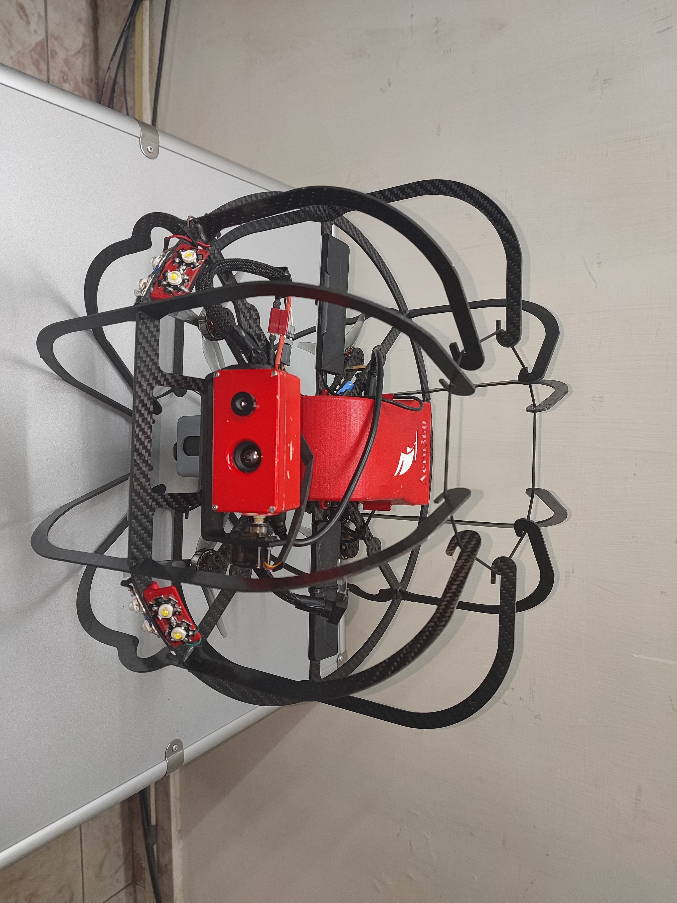
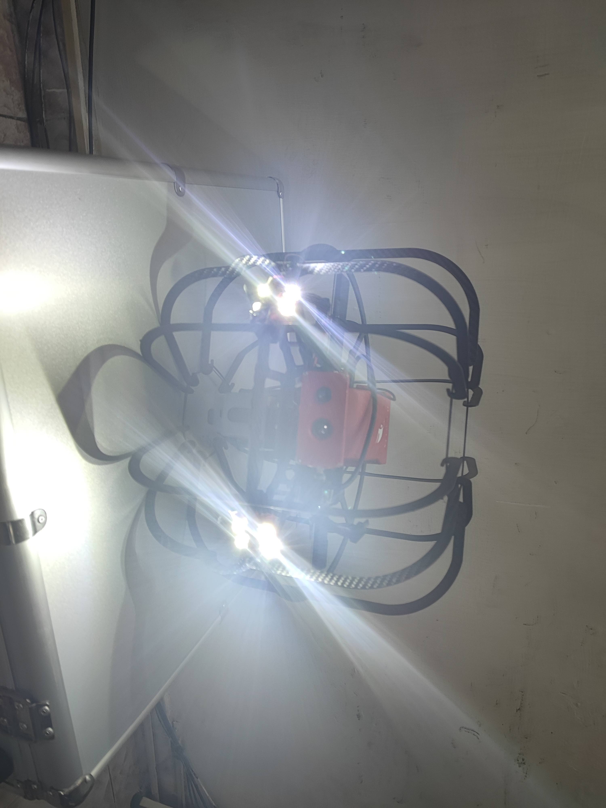

Thermal Imaging Drone for Rescue Operations
This drone system is designed to assist in critical search and rescue operations, especially in low-visibility conditions such as nighttime, smoke, or dense vegetation. It integrates a lightweight thermal camera with autonomous navigation features to locate human heat signatures and support emergency responders with real-time thermal mapping.
🛠️ Core Features & Build Highlights:
- Thermal Camera: Equipped with a FLIR Lepton sensor module to capture heat signatures in real-time.
- Flight Controller: Uses Pixhawk flight controller with GPS-based waypoint navigation for semi-autonomous operations.
- Frame & Propulsion: Lightweight carbon fiber frame with brushless motors optimized for stable hover and maneuverability.
📡 Functionality & Capabilities:
- Live thermal video feed to ground control via telemetry link.
- Ability to detect humans, animals, or heat anomalies from altitudes of 10–30 meters.
- Battery-powered endurance for 15–20 minutes per flight, extendable with modular packs.
🧭 Use Case Scenarios:
- Disaster Zones: Locate survivors in collapsed buildings or earthquake-struck regions.
- Forest Search Missions: Spot missing persons through thick canopy where visual drones fail.
- Wildlife Monitoring: Detect nocturnal species without disturbing their habitat.
🚧 Project Status:
This project is in the final prototype stage. All structural components are assembled and initial flight testing has been conducted. Integration of thermal camera feed with onboard storage and real-time transmission is currently in progress.
Project Gallery

